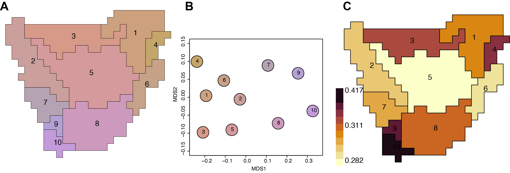

An R package for biogeographic regionalization (the classification of geographical areas in terms of their biotas) and macroecology. With macroecological datasets of ever increasing size and complexity, phyloregion offers the possibility of handling and executing very large scale analysis of biogeographic regionalization. It also allows fast and memory efficient analysis of standard conservation measures such as phylogenetic diversity, phylogenetic endemism, evolutionary distinctiveness and global endangerment. phyloregion can run on any operating system (Mac, Linux, Windows or even high performance computing cluster) with R 3.6.0 (or higher) installed.

How to cite
The original implementation of phyloregion is described in:
Daru, B.H., Karunarathne, P. & Schliep, K. (2020) phyloregion: R package for biogeographic regionalization and macroecology. Methods in Ecology and Evolution 11: 1483-1491. doi: 10.1111/2041-210X.13478.
It is based on the method described in:
Daru, B.H., Farooq, H., Antonelli, A. & Faurby, S. (2020) Endemism patterns are scale dependent. Nature Communications 11: 2115 doi: 10.1038/s41467-020-15921-6.
The original conceptual is described in:
Daru, B.H., Elliott, T.L., Park, D.S. & Davies, T.J. (2017) Understanding the processes underpinning patterns of phylogenetic regionalization. Trends in Ecology & Evolution 32: 845-860. doi: 10.1016/j.tree.2017.08.013
Installation
phyloregion is available from the Comprehensive R Archive Network, so you can use the following line of code to install and run it:
install.packages("phyloregion")Alternatively, you can install the development version of phyloregion hosted on GitHub. To do this, you will need to install the devtools package. In R, type:
if (!requireNamespace("devtools", quietly = TRUE))
install.packages("devtools")
devtools::install_github("darunabas/phyloregion")Feedback
If you have any questions, suggestions or issues regarding the package, please add them to GitHub issues
License
The license for phyloregion is similar to that of the package on CRAN:
License: AGPL-3
The AGPL-3 license can be found at: https://cran.r-project.org/web/licenses/AGPL-3